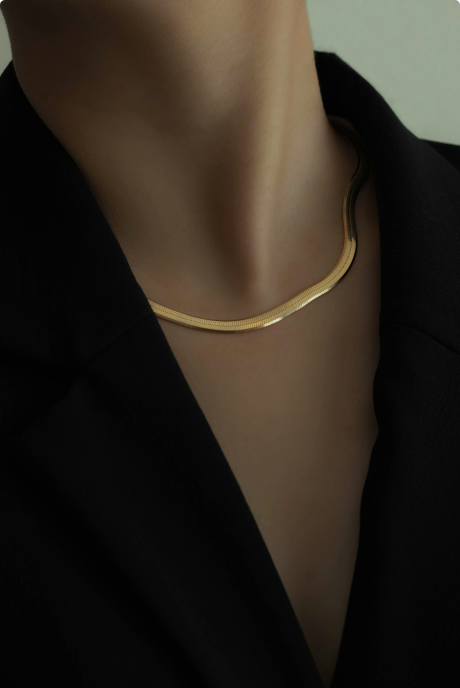

Sobre
Na Divine Shine, acreditamos que cada joia conta uma história. Desde o brilho de um anel até a sofisticação de um colar, nossas peças são mais do que acessórios — são símbolos de momentos especiais, memórias e conquistas. Combinando tradição artesanal e design contemporâneo, criamos joias únicas que refletem a beleza e a essência de quem as usa. Cada detalhe é cuidadosamente pensado para oferecer qualidade impecável, conforto e estilo atemporal. Nosso compromisso é com a excelência. Utilizamos apenas materiais selecionados, como ouro, prata e pedras preciosas, garantindo que cada peça seja duradoura e deslumbrante. Além disso, valorizamos a sustentabilidade, adotando práticas éticas em todos os processos de produção. Seja para celebrar um marco importante ou para se presentear, Divine Shine está aqui para ajudá-lo a transformar momentos em eternidade. Explore nossas coleções e descubra o brilho que combina com você.
